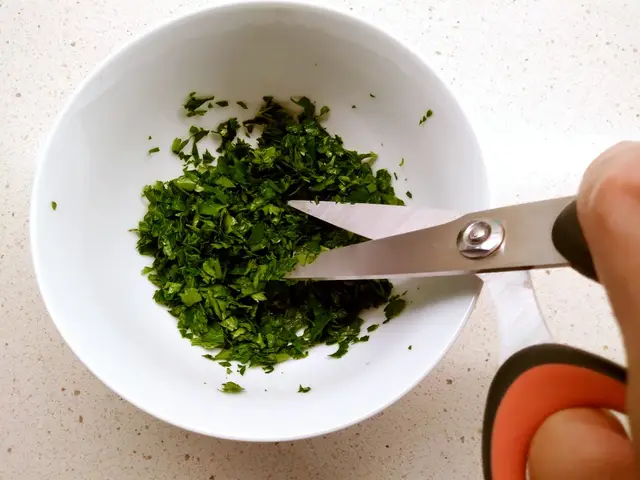
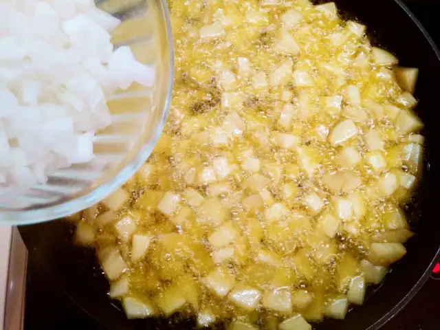
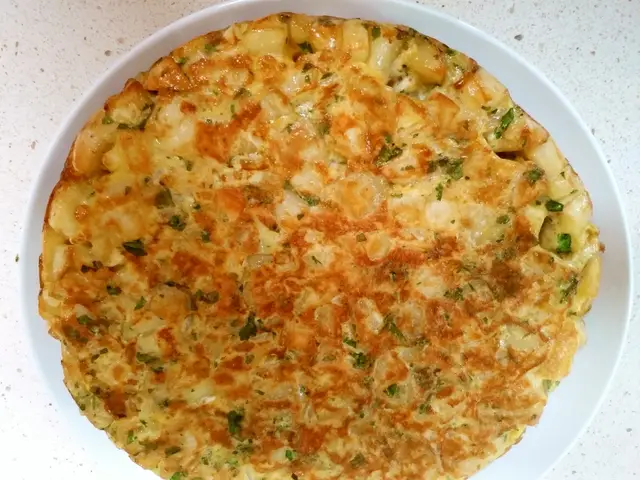

Tortilla de papas con Perejil y Cebolla: Sabor y Color en Cada Bocado
La tortilla de papas o patatas es uno de esos platos muy nuestros de los que todos nos sentimos orgullosos, y que
siempre nos trae buenos recuerdos. Quien no se acuerda de la tortilla de sus padres para ir a pasear al campo los
domingos, o la tortilla en la playa con unos filetes empanados. Hay infinidad de maneras y combinaciones de hacer este
Pasos de la receta:
- Pelamos y cortamos las papas en cubos. Añadimos sal al gusto.
- Cortamos las cebollas en trozos pequeños y picamos el perejil retirando los tallos (solo nos interesan las hojas).

- En una sartén añadimos aceite de oliva y ponemos al fuego. Cuando el aceite esté bien caliente añadimos las papas.

- Con la ayuda de una cuchara de madera las vamos moviendo para que se hagan por todas partes.
- Cuando las papas estén casi hechas, añadimos la cebolla y removemos hasta que las papas se terminen de freír.

- Con la ayuda de una espumadera, retiramos de la sartén y ponemos en un recipiente escurridor o en un bol con papel absorbente para eliminar el exceso de aceite.

- En un bol grande cascamos y batimos los huevos añadiéndole una pizca de sal fina al gusto.

- Agregamos al bol, las papas, la cebolla y el perejil. Mezclamos todo con la ayuda de nuestra amiga "la cuchara de madera"
- En una sartén grande ponemos a calentar un poco de aceite de oliva (puedes usar unas cucharaditas del mismo aceite que usaste para freír las papas y la cebolla)
- Cuando el aceite esté bien caliente, bajamos a fuego medio y añadimos el contenido de nuestro bol.
- Cuando notes que la tortilla ya está cuajada, le damos la vuelta y ponemos por el otro lado unos cuantos minutos más.
- Volteamos sobre un plato, y ya podemos disfrutar de nuestra tortilla.
